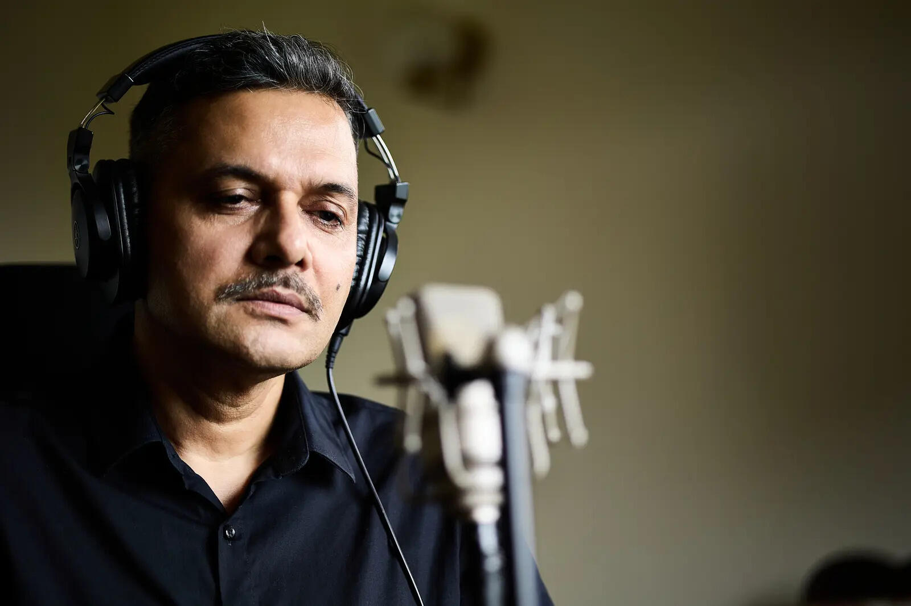

Radio storyteller
Tune in to Yaad Sheher
For more than a decade, millions of Indians switched on the radio at night to hear one voice tell them a story. This is where those stories live.

Radio storyteller
For more than a decade, millions of Indians switched on the radio at night to hear one voice tell them a story. This is where those stories live.
